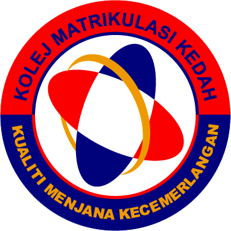

Bachelor of Business Administration (Hons) Business Economics (2020 — now)
Universiti Teknologi MARA (UiTM) Kelantan Branch, Kota Bharu Campus
Subject taken:iNTERMEDIATE FINANCIAL ACCOUNTING AND REPORTING, PRINCIPLES AND PRACTICE OF MANAGEMENT, ECONOMICS, FINANCIAL MANAGEMENT, INTERMEDIATE MICROECONOMICS, INTERNATIONAL ECONOMICS, ENGLISH FOR ORAL PRESENTATIONS and others.
C.G.P.A : 3.52
Kedah Matriculation College
C.G.P.A : 2.77
Module 2- Physic, Science Computer, Chemistry, Mathematics
<
Sekolah Menengah Kebangsaan Machang
Sijil Pelajaran Malaysia (S.P.M): A+ for Bahasa Melayu and Sejarah